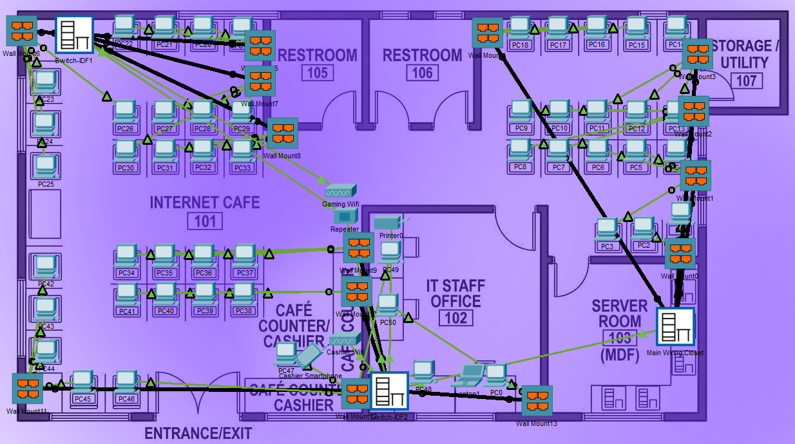

Internet Cafe Multi-VLAN Network Architecture
Designed a 50+ host network topology with structured physical cabling across MDF/IDF racks. Features VLAN segmentation, DHCP, and extended ACL security to isolate cashier traffic from gaming clients.